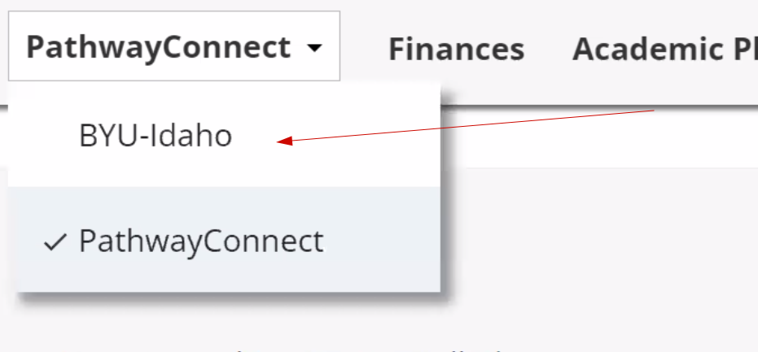
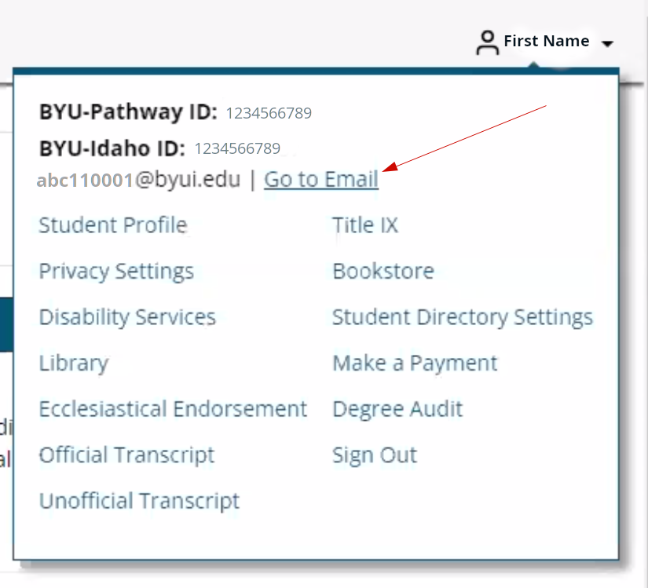

How to access BYU-Idaho e-mail
If you are not a BYU Pathway Worldwide student, scroll down to the next section.
BYU Pathway Worldwide or PathwayConnect student
Login into the Pathway Worldwide portal
Look at the top menu bar in the center and change it to say BYU-Idaho. The default is PathwayConnect
Then click on your name in the top right corner and then select Go To Email. You BYU-Idaho e-mail is to the left of this link.
This will log you into your BYU-Idaho email which is on the Microsoft 365 Servers. This is an outlook e-mail. I do not recommend forwarding all these e-mails to your personal account.
The reason for not forwarding these e-mails is because you loose who sent the e-mail and you cannot reply to it. The forwarded e-mail will come from your e-mail address at the school. You can setup Outlook on your smart device.
BYU-Idaho uses this e-mail for communications to you from the school. You will get at least 2 e-mails every week into this e-mail account. You must get into the habit of checking it at least twice a week.
For those of you the do not like email. This is the most common form of communication and you must get used to looking at it as you will be using this in business. I personally have multiple email accounts that I have to check. I have a few because some clients require me to have an email account on their system for security reasons.
How to access e-mail directly on Microsoft Site.
Once you know your BYU-Idaho e-mail address, you can login to your e-mail directly by going to: https://login.microsoftonline.com . You enter your BYU-Idaho e-mail address and then you will be prompted to login using the normal BYU-Idaho login page.
Pathway students find that from the instructions above. Other students find it on the my.byui.edu page under the Profile tab after you login.
BYU-Idaho e-mail addresses
You will have this e-mail address for the rest of your life.